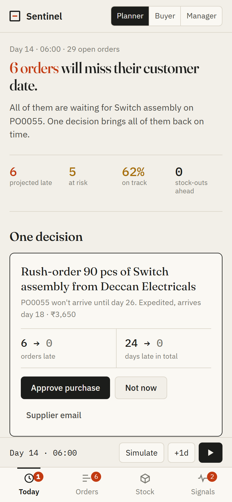

Resurrect 2026 hackathon · Problem 2: Smart Inventory Intelligence · written 27 November 2026
What we built, why, and how it works, explained from zero. No technical knowledge needed.
Try it yourself: https://chatu.in (works on phone and laptop)
The whole idea in one breath
Factories promise customers a delivery date. To keep that promise, the factory needs the right parts at the right time. Parts often come late, and people usually find out too late to fix it. Sentinel watches everything happening in the factory, spots a coming delay a week or more in advance, tells you exactly why, and suggests a fix. A person always makes the final decision.
What's inside:
Resurrect 2026 gave us 6 problems to choose from:
| # | Problem | In simple words |
|---|---|---|
| 1 | Rapid Knowledge Internalization | Help people understand hundreds of pages quickly |
| 2 | Smart Inventory Intelligence | Help a factory deliver orders on time ← we chose this |
| 3 | Human-Agent Interaction | A new way for people and AI to work together |
| 4 | Self-Learning UI | An app screen that improves itself from how people use it |
| 5 | Embedding model + visualizer | Show how AI organises the meaning of words |
| 6 | Ambiguity in language | Spot sentences that can mean two things |
The most important rule in the whole hackathon: every team must prove its solution works with measured numbers. The rules say: "Claims without measured evidence will not be scored." So it is not enough to build something that looks good. We must show numbers, compare against the normal way of doing things, and let anyone check our work.
Why Problem 2?
Imagine a factory that makes mixer grinders, fans, heaters and geysers.
A shop orders 13 mixer grinders and says: "We need them by day 21." The factory says yes. That promised day is called the customer date.
To build 13 mixer grinders, the factory needs parts: switches, bearings, heating elements. It has some parts in its store room. The rest are coming from suppliers (other companies that sell parts).
Now, one supplier quietly becomes late. The switches that were coming on day 19 will now come on day 26. Building takes 2 days, so the mixer grinders will ship on day 28, 7 days late.
And it's not only this one order. Six orders were all waiting for those same switches. All six will be late.
The real problem: in most factories, nobody notices until day 21 itself, when the order fails to go out. By then it's too late to do anything. The customer is unhappy, and the factory may lose them.
If someone had noticed on day 14, they could have quickly ordered switches from the supplier with fast delivery ("rush order"), and all six orders would have shipped on time. Noticing early is everything. That's what Sentinel does.
| Word | What it means | Everyday example |
|---|---|---|
| Order | A customer asking to buy products | "Send us 13 mixer grinders" |
| Customer date (CRD) | The day we promised to deliver. CRD stands for Customer Request Date. | "By day 21" |
| Material / part | Things needed to build a product | Switches, bearings, paint |
| Supplier | A company that sells us materials | "Deccan Electricals" |
| Purchase order (PO) | Our order to a supplier, with a number like PO0055 | "Send us 90 switches by day 19" |
| Lead time | How many days a supplier needs to deliver | Normal delivery 7 days, rush delivery 4 days |
| Rush order (expedite) | Pay a bit more to get materials faster | Like paying extra for express delivery |
| On hand | Material already in our store room | "We have 34 switches" |
| Incoming | Material ordered but not yet arrived | "200 switches are on the way" |
| Allocated | Material already promised to orders | "121 switches are needed for orders we accepted" |
| Net availability | On hand + incoming − allocated. What's really free. | 34 + 200 − 121 = 113 free |
| Days of cover | How many days our stock will last | "0.5 days of cover" means we run out tomorrow |
| Stock-out | Running out of a material | No switches left for the next order |
| Planner | Person who decides what gets built when | The main user of Sentinel |
| Buyer | Person who buys materials from suppliers | Sends the purchase orders |
| Manager | Boss who watches the big picture | Can see everything but can't approve purchases |
| Event | A small message saying something happened | "Order placed", "goods arrived", "stock counted" |
| Feed | A steady stream of events from one system | The warehouse system sends a message every time goods arrive |
| ERP / WMS | The factory's office software (orders) / warehouse software (stock) | Like the factory's diary and its store-room register |
| Simulator | A pretend factory that runs inside the computer | Like a video game version of a factory |
| AI agent | A computer helper that looks at the data and suggests actions | An assistant who says "I think you should order this" |
We named it Sentinel, which means a guard who keeps watch. It has five parts. Think of it like a person:
On top of that, we built a sixth piece used only for testing and the demo:
Here is the exact story you will see in the demo:
Without Sentinel, the factory would have discovered the problem on day 21, a full week later, when it was too late.
Open https://chatu.in. Here is what each part means.

The laptop view on day 14, right after the supplier delay.
One big sentence that tells you the most important thing right now, for example "6 orders will miss their customer date", with the reason underneath. Next to it are four numbers: projected late, at risk (less than 2 days to spare), percentage on track, and stock-outs ahead.
Each row is one order. The bar starts today and ends on the day the order will really ship.
The helper's suggestion, what it costs, and what it changes (late orders before → after). Buttons: Approve purchase, Not now, and Supplier email (to view the draft email).
A short note written for the person you selected (planner, buyer or manager). At the bottom it says how many figures were checked against the data.
Every material with on hand, incoming, allocated and net. The little bar shows days of cover. The yellow tick on it is the supplier's lead time. If the stock bar is shorter than the tick, a new order would arrive too late.
Health of the three data feeds (orders, warehouse, supplier), plus warnings like "PO0016 was due day 13 and has not arrived" or "Demand spike on Room heater".

On a phone: the Today tab (left) and an order's explanation (right). Four tabs at the bottom: Today, Orders, Stock, Signals.
How the test worked. We ran 30 different pretend factories, each for 60 days. Together they had 6,609 customer orders. The pretend factory secretly knows how every order really ends, like an answer key. Sentinel only sees the messages, never the answer key. Then we compared Sentinel's answers with the answer key.
We compared against the normal way factories work today (a standard reorder rule: "when stock gets low, order more"). Under the normal way, 496 of the 6,609 orders (7.5%) were late.
Anyone can repeat every number below with one command. That matters to the judges: "report results with enough rigor that a third party could reproduce them."
| What we checked | Result | What it means |
|---|---|---|
| Stock numbers compared with a separate calculator we wrote independently | 0 mistakes in 172,800 checks | Every stock figure was exactly right, every day, in every factory. |
| Messy messages: 1,829 repeated and 1,232 broken messages were mixed in | 1,800 of 1,800 days identical | The answers with messy data were exactly the same as with clean data. |
| Feeding all messages again in a random order | 90 of 90 identical | Run it again, get the same answer. Always. |
| What we checked | Result | What it means |
|---|---|---|
| Of the 496 orders that really were late, how many did Sentinel warn about 3 days before? | 496 of 496 (100%) | It caught every single one. |
| Same, 5 days before | 376 of 496 (76%) | Most were caught even earlier. |
| How early was the first warning? | 8 days (middle value) | Usually more than a week of time to fix it. |
| False alarms 3 days before | 164 (precision 0.75) | About 3 out of 4 warnings were real. 1 in 4 was a false alarm. |
| The normal method (a simple stock check) | 0 of 496 caught | The normal screen looked fine while orders were going late, because it checks totals, not timing. |
| Problem | Result | Notes |
|---|---|---|
| Warehouse or order system goes silent | 30 of 30 caught | Within about 17 hours. It waits 18 hours of silence before warning, so it doesn't panic over a short gap. 2 false alarms. |
| Sudden rush of orders (demand spike) | 60 of 60 caught | On the same day. 24 false alarms (about 7 in 10 warnings were real). |
| Stock quietly going missing | 89 of 89 found | Usually 3 days later, when the next stock count happened. It can't know earlier, because nobody counted. |
| Supplier deliveries that came late | 1,780 of 1,780 | Warned before the goods arrived, usually about 5 days ahead. |
| What we checked | Result | What it means |
|---|---|---|
| Briefings written by the helper | 5,400 of 5,400 passed | Every number in every note was found in the real data. 0 made-up numbers out of 76,838. |
| Stock claims in the notes | 21,668 of 21,668 correct | Checked against the separate calculator. |
| Customer dates mentioned in the notes | 5,314 of 5,314 correct | Checked against the answer key. |
Same 30 factories, same problems, run twice: once the normal way, once with Sentinel's suggestions approved.
| Average per factory (60 days) | Normal way | With Sentinel | Change |
|---|---|---|---|
| Orders delivered on time | 92.6% | 96.3% | +3.8 points |
| Late orders | 16.5 | 8.0 | about half |
| Total days late (all orders added up) | 41.8 | 15.4 | 63% less |
| Days a material was out of stock when needed | 19.2 | 8.2 | 57% less |
| Money spent on purchases | ₹7,87,512 | ₹7,85,027 | no real change |
We switched parts of Sentinel off to see what matters. Scientists call this an "ablation".
Judges respect teams that know their limits. Say these openly:
Who could use it? Any company that makes products from parts and promises delivery dates: appliances, electronics, furniture, auto parts, garments, medicines.
It's already online at chatu.in, running 24/7 on our own server. No passwords, no paid AI service, no extra cost.
We don't know the final team size yet. Here is a split for 4 members. With fewer people, combine roles.
| Member | Role | Must know well |
|---|---|---|
| 1 | Presenter and demo driver | The story (section 2), the demo (section 12), the headline numbers |
| 2 | Evidence and numbers owner | Sections 7 and 8; answers "how do you know it works?" |
| 3 | How-it-works explainer | The five parts (section 4), the sharing rule, why messy data doesn't matter |
| 4 | Real-world and business | Section 9; who would use it, what a real factory needs, cost |
| Time | Do this | Say this |
|---|---|---|
| 0:00 | Open chatu.in, press Simulate → Start over | "Factories usually find out an order is late on the day it fails. Sentinel predicts every order's ship date, all the time." |
| 0:20 | Press +1 day until day 14 | "Every number comes from the factory's messages. Repeated or broken messages are ignored, so they never change a figure." |
| 0:40 | Simulate → A supplier slips a week | "A supplier just pushed a delivery back a week." |
| 0:50 | Point at the red headline and bars, click a red row | "Six orders will now miss their date, two weeks before it happens. And here's exactly why: they're all waiting for switches on PO0055." |
| 1:20 | Point at the decision card | "Sentinel already tested a fix: rush-order 90 switches. Late orders go from 6 to 0, for ₹3,650." |
| 1:45 | Switch to Manager, show the greyed-out button | "Managers see it, but only planners and buyers can buy." |
| 1:55 | Switch to Planner, press Approve purchase | "The planner approves. Late orders drop to zero. Nothing was sent until a human said yes." |
| 2:10 | Simulate → Warehouse feed goes down, then +1 day | "If a data feed dies, Sentinel says so, instead of quietly showing old numbers." |
| 2:30 | Open Evidence | "30 pretend factories, 6,609 orders: on-time from 92.6% to 96.3%, every late order caught 3 days ahead, zero calculation mistakes." |
| 2:50 | "Our limits: it's a simulated factory and no real planner has used it yet. We wrote both down." |
Q: Isn't this just a dashboard?
A: No. A dashboard shows totals. Sentinel predicts the ship day of every order, explains why it's late, tests a fix before suggesting it, and waits for a person to approve. The normal stock check caught 0 of 496 late orders; Sentinel caught all 496.
Q: How do you know your numbers are right?
A: We wrote a second, separate calculator and compared them: 0 mistakes in 172,800 checks. With repeated, broken and out-of-order messages mixed in, the answers stayed exactly the same.
Q: What if the AI makes things up?
A: Every number the helper writes is checked against the data before it's shown. In 5,400 notes, 0 numbers were made up. If the AI ever writes a number that isn't in the data, its text is thrown away and a safe version is shown instead.
Q: Why use a pretend factory?
A: Because it gives us an answer key. In a real factory you never know for sure what "would have happened". In the simulator we know the truth for every order, so we can measure exactly. It's also our biggest limitation, and we say so.
Q: Does it just buy more stock to look good?
A: No. Spending showed no real change (₹7,87,512 vs ₹7,85,027), and the stock held was about the same. It buys smarter, not more.
Q: What about false alarms?
A: About 1 in 4 "late" warnings turns out fine. We chose this on purpose: missing a real late order is much worse than checking a false alarm. The planner can also see "at risk" separately from "late".
Q: Is it luck?
A: It was better in 28 of 30 factories, and the chance of that being luck is less than 1 in 1,000.
Q: How would a real factory start using it?
A: Load their product recipes and supplier list, connect their order and warehouse systems to Sentinel's message inbox, and add logins. The inbox already handles messy data.
| What | Where |
|---|---|
| Live website | https://chatu.in |
| Code | GitHub: roshanvijay37/resurrect2026 (private for now; ask Roshan for access) |
| Full results report | results/RESULTS.md in the code |
| Demo script | DEMO.md in the code |
| Re-run every number | One command: python -m evaluation.run_eval --seeds 30 (takes about a minute) |
| Automatic tests | 14 tests, all passing |
Technical summary for the curious: Python (FastAPI) server, a plain HTML/JavaScript website, running in a Docker container on our own Linux server behind HTTPS. AI writing (Claude) is optional and off by default; all suggestions and numbers come from rules we can check.